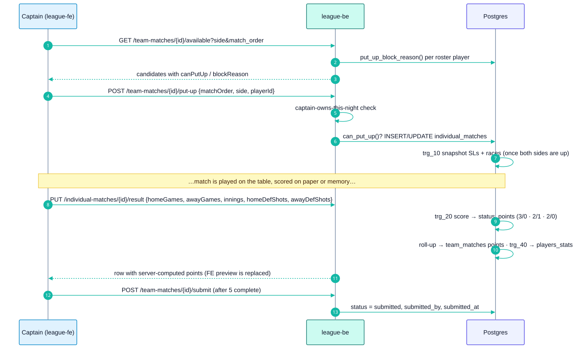
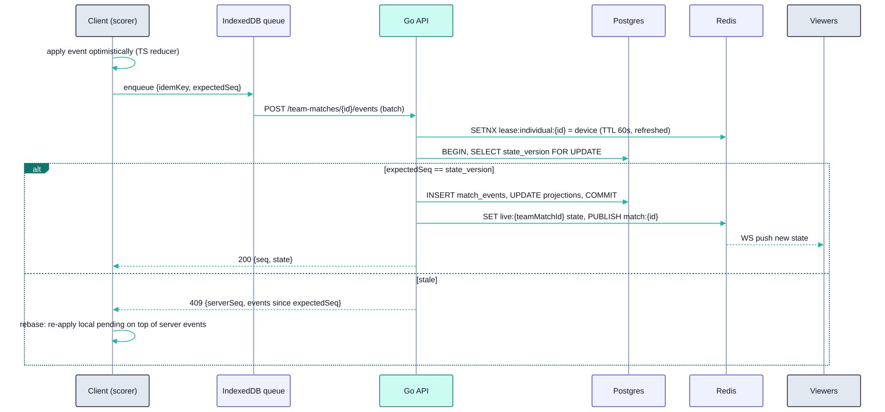

08 - Scorekeeping Engine
8.0 Phase 1 (MVP): result entry
The MVP does not score shot by shot. The captain enters each individual match's final numbers, and Postgres does the rest (Planned00002_business_rules.sql, see 06 §B).

| Concern | MVP behavior |
|---|---|
| Concurrency | Two captains can act at once; the server re-checks can_put_up() on every put-up. Results are last-write-wins per row (admins can correct after submit) |
| Validation | Games above a race, or both players at their race, raise in the trigger → 400 40001 |
| Undo | Re-submit the result with corrected numbers before the night is submitted |
| Offline | None. The PWA caches only static assets |
| Audit | individual_matches.entered_by, team_matches.submitted_by |
Everything below this point is the Target Phase 2 target: live tap-by-tap scoring. When it is built, it must either call the same Postgres scoring functions at rack end, or move the rules into a Go engine shared with TS (revisit ADR-004). Either way the cookie/CSRF/envelope conventions in 07 §1 apply.
Live scoring is the most critical and most complex part of the system. It runs on a phone in a noisy billiard club, often on poor Wi-Fi, for about 3 hours per night across many venues at once.
8.1 Design principles
- Event-sourced. Every tap is an immutable event in
match_events. All scores, innings, DS and points are projections of the event log. This gives an audit trail, undo, dispute evidence and SL recalculation from raw data. - Deterministic pure reducer.
state' = reduce(state, event)runs on the server (authoritative) and is mirrored in TypeScript inleague-fe/src/libfor optimistic UI and offline use. Both are tested against the same JSON fixtures. Whether the server side is a new Go package or stays in the Postgres scoring functions (called at rack end) is the Phase 2 ADR-004 revisit. - Server authoritative. The client applies events optimistically. The server validates, assigns
seqand broadcasts. On conflict the client rebases. - Offline-tolerant. Events are queued in IndexedDB with client-generated
idempotency_keys and replayed when the connection returns. - Single active scoring device per individual match (lease), with read-only live viewers.
8.2 Team match lifecycle

8.3 Event catalogue
All events share {idempotencyKey, teamMatchId, expectedSeq, clientTs, deviceId, type, payload}.
8.3.1 Team-level events
| Type | Payload | Validations |
|---|---|---|
START_TEAM_MATCH |
{scorekeeperName} |
Status SCHEDULED; actor is a captain of either team or LO; within the start window Assumption (±2 h of scheduled) |
ROSTER_ADD_PLAYER |
{teamId, playerId} |
Before match 1 starts; player is a paid member (R-014), eligible in the division (R-011/R-012); captain of that team. Brand-new players are created via the admin API (R-018) |
COIN_FLIP_RECORDED |
{winnerTeamId, choice} |
Once |
PUT_UP_PLAYER |
{order, teamId, playerId} |
Correct team per R-030/R-031; player not used yet; cap feasibility (R-035) |
RESPOND_PLAYER |
{order, teamId, playerId} |
Same checks for the other team |
FORFEIT_SLOT |
{order, forfeitingTeamId} |
No eligible player |
SUBMIT_TEAM_MATCH |
{} |
All 5 slots COMPLETED/FORFEIT |
VERIFY |
{teamId, decision, snapshotHash, comment} |
Captain of teamId; hash equals the server hash for CONFIRM |
LO_RESOLVE |
{resolution, corrections[], grantBonus} |
LO only; corrections produce ADMIN_CORRECTION events |
8.3.2 Individual match / rack events
| Type | Payload | Effect |
|---|---|---|
LAG_RECORDED |
{winnerPlayerId, breakerPlayerId} |
Lag winner chooses the breaker. Sets activePlayer = breaker. Rack 1 opens |
TURN_OVER |
{playerId} |
Must be the active player. Switches the active player. If playerId == secondShooter → innings++ (R-100) |
DEFENSIVE_SHOT |
{playerId} |
ds[player]++ and then the same effect as TURN_OVER (R-102) |
TIMEOUT |
{playerId} |
timeoutsLeft[player] > 0; decrement (resets per rack) |
BALL_POCKETED (9B) |
{ball:1..9, playerId} |
Ball not yet accounted for in this rack; points += 1 (or 2 for the 9); if ball==9 → rack ends |
DEAD_BALL (9B) |
{ball:1..8} |
Not the 9 (R-082); deadBalls++ |
RACK_END (8B) |
{outcome, shooterPlayerId} |
BR/8OB only if firstTurnLive (R-060). Winner = shooter for win codes, opponent for loss codes |
UNDO |
{revertsSeq} |
Only the last non-undone event of the individual match. The projection is re-reduced |
SWITCH_ACTIVE_PLAYER |
{playerId} |
Correction from the overflow menu (⋮) |
ADMIN_CORRECTION |
{path, from, to, reason} |
LO only, post-match, audited |
8.4 Reducer state (per individual match)
type LiveMatchState = {
format: 'EIGHT_BALL' | 'NINE_BALL';
order: 1|2|3|4|5;
players: { home: PlayerRef; away: PlayerRef }; // with SL snapshot
needed: { home: number; away: number }; // race games or target points
won: { home: number; away: number }; // games or points (capped)
lagWinner: Side; breaker: Side;
secondShooter: Side; // innings counter side
activePlayer: Side;
innings: number; // match total
rack: {
no: number; breaker: Side; innings: number;
firstTurnLive: boolean; // R-060
ds: { home: number; away: number };
timeoutsLeft: { home: number; away: number };
balls?: Record<1|2|3|4|5|6|7|8|9, Side | 'dead' | null>; // 9B
points?: { home: number; away: number }; // 9B
};
ds: { home: number; away: number }; // match totals
status: 'LAG' | 'IN_PROGRESS' | 'COMPLETED';
result?: { winner: Side; ptsEarned: { home: number; away: number } };
accolades: Accolade[];
};8.4.1 8-Ball reduction (pseudo)
on RACK_END(outcome, shooter):
assert status == IN_PROGRESS
if outcome in {BREAK_AND_RUN, EIGHT_ON_BREAK}: assert rack.firstTurnLive && shooter == rack.breaker
winner = outcome in WIN_CODES ? shooter : other(shooter)
won[winner] += 1
record accolade(BR | 8OB) for shooter if applicable
if won[winner] == needed[winner]:
status = COMPLETED
loser = other(winner)
pts = points8(won[loser], needed[loser]) # 04 §5.3
if won[loser] == 0 and lagWinner == winner: accolade RACKLESS
check DOUBLE_STRIKE for each player on the team-match night
else:
open next rack: breaker = (break_rule == WINNER ? winner : alternate)
rack.firstTurnLive = true; timeouts reset by SL
on TURN_OVER(p):
assert p == activePlayer
rack.firstTurnLive = false
if p == secondShooter: innings += 1; rack.innings += 1
activePlayer = other(p)8.4.2 9-Ball reduction (pseudo)
on BALL_POCKETED(ball, p):
assert rack.balls[ball] == null and p == activePlayer
rack.balls[ball] = p
pts = (ball == 9) ? 2 : 1
won[p] = min(needed[p], won[p] + pts) # R-083 cap
if won[p] == needed[p]: complete match
loserPts = lookup20(loserSL, won[loser]); winnerPts = 20 - loserPts
elif ball == 9:
remaining unaccounted balls → prompt "mark as dead?" → DEAD_BALL events
if breaker legal-break & firstTurnLive & ball==9 on break → accolade 9OB
open next rack (breaker per rule)
on DEAD_BALL(ball): assert ball != 9; rack.balls[ball] = 'dead'Innings detail (both formats). The inning counter belongs to the match. It increments only on the second shooter's turn ends (TURN_OVER or DEFENSIVE_SHOT). A rack that ends during the first shooter's turn does not increment the inning. This matches the APA paper rule "An inning is not over … until the player who lost the initial lag misses or otherwise completes his/her turn."
8.5 Concurrency, ordering, and offline

- Idempotency: a duplicate
idempotency_keyreturns the original result (HTTP 200, same seq). - Scoring lease: only the device holding
lease:individual:{id}can write rack events. Another captain or LO can take over explicitly (audited). This handles a phone dying mid-match. - Batching: the client sends up to 50 queued events per request, in order. The server processes them sequentially in one transaction, so partial failure stops at the first invalid event.
- Clock: ordering is by server
seq.client_tsis used only for display and shot-timer analytics.
8.6 Verification snapshot
On SUBMIT_TEAM_MATCH, the server builds a canonical JSON:
{
"teamMatchId": "<team-match-uuid>",
"matches": [
{
"order": 1,
"home": {
"memberNo": "26110042",
"sl": 5,
"won": 4,
"needed": 4,
"pts": 2,
"innings": 17,
"ds": 1
},
"away": {
"memberNo": "26100007",
"sl": 3,
"won": 1,
"needed": 2,
"pts": 1,
"innings": 17,
"ds": 0
}
}
],
"totals": {
"home": 9,
"away": 5
}
}A real snapshot has 5 items in matches (orders 1–5). Only order 1 is shown here. Keys are sorted and whitespace is removed before hashing, so formatting never changes the hash.
snapshot_hash = sha256(canonical_json). Each captain's app shows the summary (mirrors Foundation #3/#4) and sends VERIFY {decision, snapshotHash}. If both CONFIRM with an equal hash → FINALIZED, bonus applied (R-110). In Phase 2 dual-device mode, each team's scorer keeps its own event stream. The server diffs the projections and produces disputes.diff if they differ.
8.7 Post-finalization pipeline

The transactional outbox pattern (an outbox table written in the finalize transaction and polled by the worker) guarantees at-least-once processing. Consumers are idempotent.
8.8 Edge cases checklist (each must have a test)
| # | Case | Expected |
|---|---|---|
| 1 | SL2 vs SL2, loser wins 1 | Hill → 2-1 |
| 2 | 8OB after a turn-over in the same rack | Rejected (R-060) |
| 3 | Early 8 by the breaker on the break | LOSS for the breaker (E8), opponent +1 |
| 4 | 9-ball pocketed on a foul | Not dead, re-spot; no points; rack continues |
| 5 | 9B player at 37/38 makes the 9 | Recorded 38 (capped), match ends |
| 6 | Rack ends on the first shooter's turn | Innings unchanged |
| 7 | Undo after a match-ending rack | Match re-opens, points cleared |
| 8 | Lineup would exceed 23 | Player disabled with reason "would exceed 23 SL cap" |
| 9 | Two devices submit the same event offline | Second is idempotent no-op |
| 10 | Two devices submit different events at the same seq | Second gets 409 and rebases, or is rejected without a lease |
| 11 | SL changed by the LO mid-night | Matches already created keep the snapshot; later slots use the new SL |
| 12 | Forfeit slot 5 | Opponent 3 pts (8B) / 20 pts (9B) Assumption; no MP for either player |
| 13 | Verification deadline passes with one confirm | FINALIZED_NO_BONUS for both teams Assumption |
| 14 | BR + 8OB by the same player on the same night | DOUBLE_STRIKE accolade once per night |